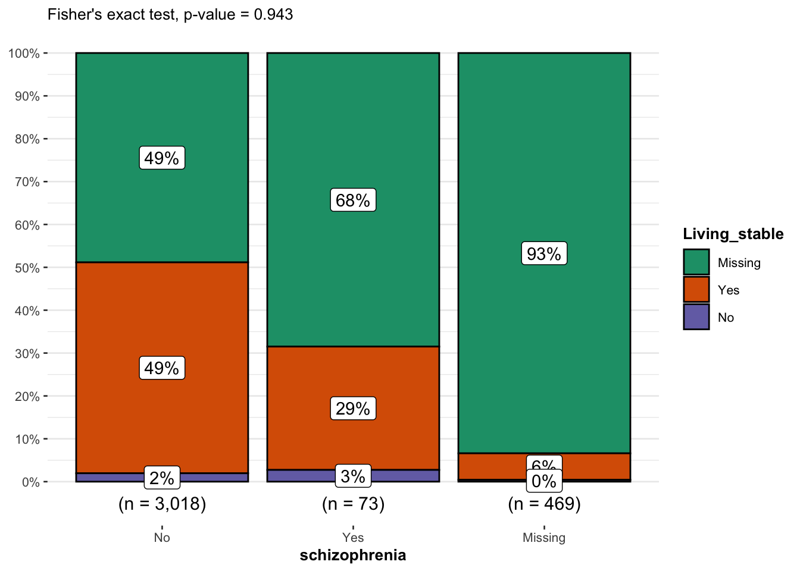
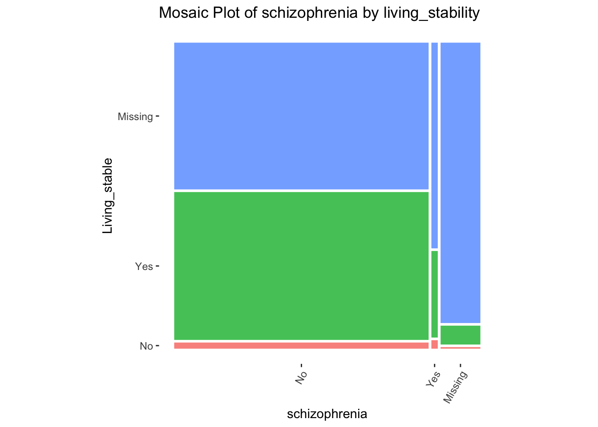

#Installing Required Packages
#install.packages("public.ctn0094data")
#install.packages("gtsummary")
#Install ggstatsplot package
#install.packages("ggstatsplot")
#install.packages("ggmosaic")
#install.packages("tidyverse")
# Loading Required Packages
library(public.ctn0094data)
library(gtsummary)
library(ggstatsplot)
library(ggmosaic)
library(tidyverse) Fisher’s Exact Test
1 Introduction to Fisher’s Exact test
Fisher’s exact test is a non-parametric statistical test used to test an association between categorical variables.
It is analogous to Chi-square test, but Fisher’s exact test is conducted when rule of Chi-square test cannot be applied, such as when the sample size in small and more than 20% of cells have expected frequency count of <5 in a contingency table (Bower 2003).
Used to assess whether the proportions of categories in two group variables significantly differ from each other.
Uses (hypergeometric) marginal distribution to compute exact p-values which are not approximated, which are also somewhat conservative.
2 Assumptions
- Assumes that the individual observations are independent - variable are not paired or related.
- Assumes that the row and column totals are fixed or conditioned.
- The variables are categorical and randomly sampled.
- Observations are count data.
3 Hypotheses
The hypotheses of Fisher’s exact test are similar to Chi-square test:
Null hypothesis:\((H_0)\) There is no significant relationship between the categorical variables (variables are independent).
Alternative hypothesis: \((H_1)\) There is a significant relationship between the categorical variables (variables are dependent).
4 Mathematical definition of Fisher’s Exact test
This test is usually used as a one-tailed test. It can also be used as a two tailed test.
Fisher’s exact test for a one-tailed p-value is calculated using the following formula:
\[ p = {(a+b)!(c+d)!(a+c)!(b+d)! \over a! b! c! d! n!} \]
4.1 Formula description
- \(a\),\(b\),\(c\), and \(d\) are the individual frequencies on the 2x2 contingency table - \(n\) is the population size (total frequency). This particular test is used to obtain the probability of the combination of frequencies that we can actually obtain
5 Intalling required packages
- First, we installed and loaded the packages needed for this presentation.
6 Data source and description
- For this demonstration of the Fisher’s Exact test , we utilized the
demographics, andpsychiatricdata sets from the{public.ctn0094data}package thepublic.ctn0094datapackage .The public.ctn0094data package contains de-identified and harmonized datasets from the Clinical Trials Network (CTN) protocol number 0094. This project, funded by the US National Institute on Drug Abuse (NIDA), focuses on opioid use disorder (OUD) and includes data from three clinical trials: CTN-0027, CTN-0030, and CTN-0051.The data describe the experiences of patients seeking care for opoid use disorder (OUD).
_ The demographics dataset contains the demographic variables such as age, sex, race, living condition, marital status etc. The psychiatric dataset contains data on different mental health issues and susbstance use, including bipolar, depression, schizophrenia, cocaine use etc.
# Search for suitable data sets
data(package = "public.ctn0094data") #list of all datasets in package
data(demographics, package = "public.ctn0094data")
#colnames(psychiatric)
data(psychiatric , package = "public.ctn0094data")
#colnames(psychiatric) 6.1 Create a model data frame
- We joined the
demographicsandpsychiatricdata sets within the{public.ctn0094data}package by participants ID (whovariable) to create new data_frame.
# Joining data sets:
psych_df <- demographics %>%
left_join(psychiatric, by = "who")
#view dataset
#head(psych_df)
#str(psych_df)
# Selecting variables of interest for our analysis
model_df<- psych_df %>%
select(age, race, education, is_male, marital, is_living_stable,
has_schizophrenia)
#model_df6.2 Participants characteristics Summary table
- Here, we want to view the frequency of the variables in our dataset using the table summary function
tbl_summary ().
# Create Table 1, change the Label using the label function and also view the missing values
table_lab <-
model_df %>%
tbl_summary(
label = list(
age = "Age",
race = "Race",
education = "Education_Level",
is_male = "Male",
marital = "Marital_Status",
is_living_stable = "Living_Condition",
has_schizophrenia = "Schizophrenia"
), missing_text = "(Missing)"
)
table_lab| Characteristic | N = 3,5601 |
|---|---|
| Age | 34 (27, 45) |
| (Missing) | 208 |
| Race | |
| Black | 365 (10%) |
| Other | 506 (14%) |
| Refused/missing | 58 (1.6%) |
| White | 2,631 (74%) |
| Education_Level | |
| HS/GED | 691 (39%) |
| Less than HS | 352 (20%) |
| More than HS | 724 (41%) |
| (Missing) | 1,793 |
| Male | 2,351 (66%) |
| (Missing) | 4 |
| Marital_Status | |
| Married or Partnered | 329 (19%) |
| Never married | 1,028 (59%) |
| Separated/Divorced/Widowed | 394 (23%) |
| (Missing) | 1,809 |
| Living_Condition | 1,535 (96%) |
| (Missing) | 1,962 |
| Schizophrenia | 73 (2.4%) |
| (Missing) | 469 |
| 1 Median (IQR); n (%) | |
6.3 Recode to indicate variable factor levels
#| label: Includes the factor levels of variables of interest in table
#| message: false
#| warning: false
# Recoding `is_living_stable` and has_schizophrenia`converting all NA to 99
model_df <- model_df %>%
mutate(Living_stable = ifelse(is.na(is_living_stable), 99, is_living_stable))
model_df <- model_df %>%
mutate(schizophrenia = ifelse(is.na(has_schizophrenia), 99,
has_schizophrenia))
# Convert into factor and rename factor levels
model_df$Living_stable <- factor(model_df$Living_stable,
levels = c(1, 2, 99),
labels = c("No", "Yes", "Missing"))
model_df$schizophrenia <- factor(model_df$schizophrenia,
levels = c(1, 2, 99),
labels = c("No", "Yes", "Missing"))
#str(model_df)7 Contingency Table with tbl_summary Function
This is a table that shows the distribution of a variable in the rows and columns. Sometimes referred to as a 2x2 table. They are useful in summarizing categorical variables.
We want to create a contingency table of the demographic variable by
living_stableto Check the distribution of the frequency count of variables (is_living_stable,Yes=stableandNo=unstablehas_schizophrenia,Yes= schizophrenia diagnosed andNo= no schizophrenia).
# creating new data frame keeping only the categorical variable of interest for our contingency table in the next section
finalmodel_df <- select(model_df, schizophrenia, Living_stable)
finalmodel_df# A tibble: 3,560 × 2
schizophrenia Living_stable
<fct> <fct>
1 No Yes
2 No Yes
3 No Yes
4 No Yes
5 Missing Missing
6 No Yes
7 No Yes
8 Missing Missing
9 No Yes
10 Yes Yes
# ℹ 3,550 more rows# Adding label and overall number
table_Cong2 <-
finalmodel_df %>%
tbl_summary(by = Living_stable) %>%
#add_n() %>%
add_overall() %>%
modify_spanning_header(c("stat_1", "stat_2") ~ "**Living_stable**")
table_Cong2| Characteristic | Overall, N = 3,5601 | Living_stable | Missing, N = 1,9621 | |
|---|---|---|---|---|
| No, N = 631 | Yes, N = 1,5351 | |||
| schizophrenia | ||||
| No | 3,018 (85%) | 59 (94%) | 1,485 (97%) | 1,474 (75%) |
| Yes | 73 (2.1%) | 2 (3.2%) | 21 (1.4%) | 50 (2.5%) |
| Missing | 469 (13%) | 2 (3.2%) | 29 (1.9%) | 438 (22%) |
| 1 n (%) | ||||
-From the table, it seems like the patients who were homeless (answered no to living_stable) were less likely to be diagnosed with schizophrenia. However, this is not conclusive as we cannot tell if this relationship was a true correlation or it was due to random sampling error.So we will perform the Fisher’s Exact test to confirm the relationship.
8 Performing the Fisher’s exact test using the function fisher.test()
Priori, we hypothesized that people who are diagnosed as being schizophrenic are more likely to homeless (unstable living). So we conducted a one-tailed Fisher’s Exact test and specify the direction of the test as “greater”.
For a two-tailed test, the direction (either
less or greater) is not specified.
# running one-tailed fisher's exact test
fmodel_df1 <- fisher.test(model_df$is_living_stable,
model_df$has_schizophrenia,
alternative = "greater")
fmodel_df1
Fisher's Exact Test for Count Data
data: model_df$is_living_stable and model_df$has_schizophrenia
p-value = 0.9429
alternative hypothesis: true odds ratio is greater than 1
95 percent confidence interval:
0.1159862 Inf
sample estimates:
odds ratio
0.4175209 # running two-tailed fisher's exact test
fmodel_df2 <- fisher.test(model_df$is_living_stable,
model_df$has_schizophrenia)
fmodel_df2
Fisher's Exact Test for Count Data
data: model_df$is_living_stable and model_df$has_schizophrenia
p-value = 0.2246
alternative hypothesis: true odds ratio is not equal to 1
95 percent confidence interval:
0.09821534 3.75679596
sample estimates:
odds ratio
0.4175209 #test$p.value 9 Interpretation of results
9.1 One-Tailed test
Null Hypothesis (H₀): people who reported unstable living (homeless) are not more diagnosed with schizophrenia.
Alternative Hypothesis (H₁): people who reported unstable living(homeless) are more diagnosed with schizophrenia.
- The p value is greater than 0.05 (p=0.9429), we fail to reject the null hypothesis. We conclude that people who reported unstable living are not significantly more likely to be diagnosed with schizophrenia than those who reported stable living.
9.2 Two-tailed analysis
Null Hypothesis (H₀): There is no association between living-stable and schizophrenia diagnosis variable
Alternative Hypothesis (H₁): There is a association between living condition and schizophrenia diagnosis.
Our p-value = 0.2246 , we fail to reject the null hypothesis ((p > 0.05)), which indicates that there is no statistically significant association between living condition and schizophrenia diagnosis.
10 Visualization of the statistical test output
we would like to have a visual represention of the distribution of the categories of our analysis:
- Barplot using ggstatsplot (for statistical details)
#| label: intall and load package
#| message: false
#| warning: false
# combine plot and statistical test with ggbarstats
ggbarstats(
finalmodel_df, Living_stable, schizophrenia,
results.subtitle = FALSE,
subtitle = paste0(
"Fisher's exact test", ", p-value = ",
ifelse(fmodel_df1$p.value < 0.001, "< 0.001", round(fmodel_df1$p.value, 3))
)
)
- Mosaic plot
# Basic Mosaic Plot
mosaic_basic <- finalmodel_df %>%
ggplot() +
geom_mosaic(
aes(
x = product(schizophrenia),
fill = Living_stable
)
) +
labs(
#y = "Living_stable",
#x = "schizophrenia",
title = "Mosaic Plot of schizophrenia by living_stability") +
# Specifies default `geom_mosaic` aesthetics, e.g white panel background,
# removes grid lines, adjusts widths and heights of rows and columns to
# reflect frequencies
theme_mosaic() +
theme(legend.position = "None") +
theme(axis.text.x = element_text(angle = 60, hjust = 1, vjust = 1))
mosaic_basic
11 Interpretation of plots
- As shown in the Fisher’s Exact test, there was no statistical significant association between living-stability and schizophrenia diagnosis. Hence, the interpretation of the plots is based on description of the charts :
###Box Plot
- patients who indicated living_stable (not homeless) had the highest proportion of not having being diagnosed with schizophrenia.
- patients who indicated not having stable living (homeless) had the highest proportion of being diagnosed with schizophrenia.
###Mosaic plot
- Compared to those who are not homeless, those who are homeless had the highest proportion of being diagnosed with schizophrenia.
12 References
- Bower, Keith M. 2003. “When to Use Fisher’s Exact Test.” In American Society for Quality, Six Sigma Forum Magazine, 2:35–37. 4.
- McCrum-Gardner, Evie. 2008. “Which Is the Correct Statistical Test to Use?” British Journal of Oral and Maxillofacial Surgery 46 (1): 38–41.
- Wong KC. Chi squared test versus Fisher’s exact test. Hong Kong Med J. 2011 Oct;17(5):427
- Patil, I. (2021). Visualizations with statistical details: The ‘ggstatsplot’ approach. Journal of Open Source Software, 6(61), 3167, doi:10.21105/joss.03167
- Zach Bobbit. (2021). Fisher’s Exact Test: Definition, Formula, and Example